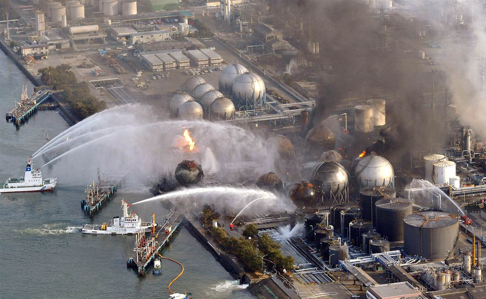
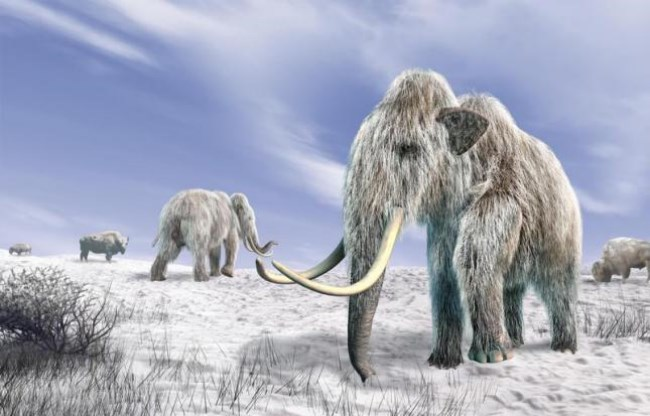

¿QUÉ ES? El calentamiento global es un aumento gradual de la temperatura de la Tierra y representa una de las mayores amenazas que en la actualidad se ciernen sobre la vida humana y la del resto de los seres que habitan el planeta.Es difícil pensar en eventos que sean lo suficientemente poderosos como para perturbar la vida en todo el planeta; están los desastres naturales como los grandes terremotos, las erupciones de los volcanes o los tsunamis (maremotos), pero sus efectos suelen limitarse a una sola región del mundo (aunque ha habido excepciones).Las explosiones nucleares catastróficas, como las ocurridas en Chernóbil (Ucrania) en 1986 o más recientemente en Fukushima (Japón) en 2011, pueden propagar restos radiactivos tóxicos a través de todo un continente, pero incluso así no afectaron a toda la Tierra.El calentamiento global es el producto de una gran variedad de acciones de los seres humanos, que hacen que la Tierra se caliente ligeramente un poco más cada año. De hecho, desde 1900 el calor del planeta ha aumentado en alrededor de 0,8ºC. A finales del siglo XXI, sin embargo a causa del calentamiento global es probable que la suba de las temperaturas sea de alrededor de 2 a 5ºC. Un calentamiento de 5 grados puede parecer un tema no muy preocupante, pero es cantidad que “a priori” parece pequeña es similar a la gran diferencia que existe entre el mundo tal como es hoy y como lo fue durante la última Edad del Hielo.
¿QUÉ CAUSA?
En otras palabras, cuando la Tierra salió de la Edad del Hielo, el planeta se calentó también unos 5 grados, pero lo hizo en aproximadamente 5000 años. El cambio climático moderno amenaza con producir la misma cantidad de calentamiento en tan sólo un siglo. Y una vez que algo tan grande como un planeta comienza a calentarse, es muy difícil frenar el proceso y casi imposible de detener por completo, por lo que se transforma en un gran problema.El calentamiento global es causado por un fenómeno conocido como efecto invernadero. Un invernadero se utiliza para plantar cultivos que requieran determinadas condiciones estables y temperaturas altas, por eso el cristal de sus paredes atrapa el calor en el interior y lo mantiene más caliente que el exterior alrededor de él.En otras palabras, cuando la Tierra salió de la Edad del Hielo, el planeta se calentó también unos 5 grados, pero lo hizo en aproximadamente 5000 años. El cambio climático moderno amenaza con producir la misma cantidad de calentamiento en tan sólo un siglo.Ya que los efectos como cambios en los patrones de precipitaciones y el aumento del nivel del mar probablemente tendrían más impacto que solo las temperaturas, consideró cambio climático global un término más científicamente exacto y, al igual que el Grupo Intergubernamental de Expertos sobre el Cambio Climático, el sitio web de la NASA enfatizaría este contexto más amplio. Buena parte de la comunidad científica ha empezado a usar los términos crisis climática y emergencia climática en lugar de calentamiento.